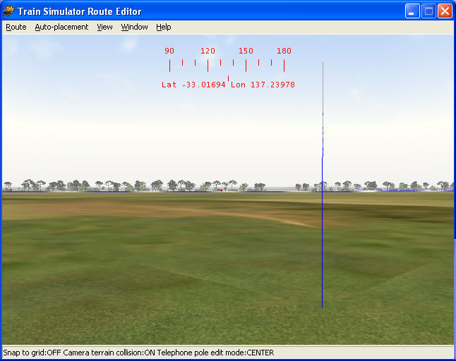

Correcting the Orphan Blue Pole / Matrix3x3 Errors
compiled by Yuri Sos and Allan Lownsborough
with valuable contributions by Charlie Leveritt
Overview
Blue Poles
You see them in Route Editor - these pesky "blue poles" that seem to be out in the landscape on their own. You can't select them, you can't delete them - these are the so-called "orphan blue poles". The cause is unknown as they appear randomly even when carefully saving practices are employed in Route Editor.
You may not even see the "blue poles", but have arrived at this tutorial after finding lots of "matrix3x3" errors in your Ts_Utils Integrity Check Report. No matter, the repair principles are similar.
The easiest way to get rid of these is to revert to an earlier backup, but so often these blue poles have gone un-noticed through many back-ups and changes.
Nevertheless, if you aren't backing up your route on a regular basis, here's the link to the Route_Riter tutorial on back-ups: click here for a tutorial on using Route_Riter to back up your files.

Matrix3x3 errors (?) - are these really errors?
Carl-Heinz Rive, author of TsUtils says "I don't know for sure if 'matrix3x3' is really an error. Therefore this message (reporting the presence of a matrix3x3 parameter in TsUtils ichk report) is marked with a 'question mark'.
Normally, 'matrix3x3' should be NO error, but forum-discussion shows that there may be various problems if 'matrix3x3' is used within a world-object-definition instead of 'qdirection' . Therefore this message is logged.
'matrix3x3' and 'qdirection' (which must be used 'either..or') define the position of an object within space relative to north heading.
'qdirection' is (mathematically) a 'quaternion' which defines a rotation from a default heading to the current heading of the object (but also 'bank' and 'slope': 3 dimensions). More information about this can be read in the documentation that accompanies Michael Vone's 'Object-Rotator'.
'matrix3x3' is another way to define the position of an object within space. The exact meaning of the values within the definition is not known to me. However, as far as I know you can define an object unambigous within space using 3 coordinates (each 3 dimensions) and together with the 'position'-value of an object-definition, there are 4 coordinates available."

As Carl-Heinz says, there's some debate as to whether these matrix3x3 parameters are even errors as they appear in the .W files in both Static objects as well as TrackObj (both road and rail) statements within .W files (see a snippet of ichk report above).
Tutorial Authors' opinion: The presence of the orphan blue pole indicates that it is part of the track database: the track piece that's specified within the TrackObj that contains a matrix3x3 parameter is never visible, nor is it even on the normal track alignment. Thus we believe they should be corrected or deleted as soon as they are found.
However, Matrix3x3 statements that ARE NOT part of a TrackObj representing an orphan blue pole (ie the road or track piece appears to be placed correctly) should be left alone (an example of this follows shortly).